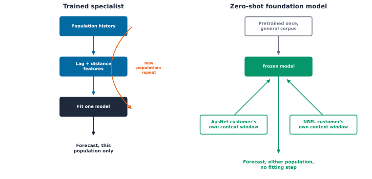

load_data: (342, 365, 48) (customers, days, half-hours)Part 8 Chapter 4: Do Foundation Models Fail Like Everything Else Does?
Every chapter in Part 8 so far has trained something on this exact 342-customer AusNet pool, however cheaply: a baseline in Chapter 1, a full LightGBM pipeline in Chapter 2, three probabilistic backbones in Chapter 3. That is the standard framing this whole literature still leans on for a new population: collect its history, engineer its features, fit a model to it, repeat the whole pipeline for the next population. A time-series foundation model claims to break that framing entirely, pretrained once on a huge, unrelated corpus, pointed directly at a customer it has never seen, zero-shot, no fitting step at all.
This chapter runs that claim against two real pretrained models, Chronos-2 [1] and TimesFM [2], on the exact same 342 real AusNet customers Chapters 1 through 3 already know in detail. Neither model has ever seen an AusNet reading. Neither gets a single gradient step on this data. Both are just pointed at a customer’s own recent history and asked to forecast the next real day, and both come in more accurate than unified, Chapter 2’s own trained LightGBM winner, on the exact same real day: 0.2268 and 0.2290 kW mean absolute error against unified’s own 0.2418, checked on the identical 342 customers and the identical real test window, not a hand-picked comparison. That result alone does not settle anything, and should not be read as one.
The real question is not whether a zero-shot model can match a model trained specifically on this data. That would be a surprising, and frankly suspicious, result, and chasing it would miss the more useful question underneath. The real question is whether a foundation model’s own failures land on the same customers Chapters 1 and 2 already found hard, or on a genuinely different subset, customers a model trained on smart-meter data specifically would never struggle with. That distinction decides what a foundation model is actually good for in a deployment: a substitute if the failures overlap, since then it buys nothing a trained model didn’t already buy; a real candidate for an ensemble or a cold-start fallback if they diverge, since then it is wrong in a different, complementary way.
Three chained questions push past what a single accuracy number can answer:
- Does either foundation model’s zero-shot accuracy even get close to a model trained specifically on this population, or is the training investment obviously still worth it?
- When a foundation model gets a customer wrong, is it the same customer Chapter 1’s own forecastability profile already flagged as hard, or a genuinely different one?
- Does the one real advantage a foundation model has over a trained model, no retraining needed to move to a new population, actually hold up on real data neither model has ever seen?
Two ways to know a population
Every mechanism in Chapters 1 through 3 depends on having trained something on this exact population first. A foundation model breaks that dependency in a specific, checkable way: it consumes a customer’s own raw context window directly, with no population-specific fitting step in between.
Key Concept
A trained specialist and a zero-shot foundation model answer “how do I know this population” in two structurally different ways. The specialist collects that population’s own history, engineers features from it, and fits a model to it, a real pipeline that has to run again in full for every new population. The foundation model is pretrained once, before this book ever loaded a single AusNet reading, and consumes any customer’s raw context window directly at inference time, the same frozen weights whether that customer is from AusNet or from NREL ResStock later in this chapter. Neither is free: the specialist pays a real, repeated training cost per population; the foundation model pays for that flexibility in inference latency and, as the last section below checks directly, in whatever accuracy it loses by never having seen this specific population’s own real behavior.

Setup: the same population, recomputed, not imported
Nothing from Chapter 1 or Chapter 2 is saved to disk anywhere in this book, so this chapter recomputes both directly, with the identical constants and the identical code, rather than re-deriving a looser approximation of what those chapters already found.
Chapter 1’s own four-metric forecastability profile, permutation entropy, sample entropy, the Hurst exponent, and the DFA exponent, recomputed identically on the same 342 customers.
unified, Chapter 2’s own real winner, one LightGBM model pooled across every customer with each customer’s own archetype-centroid distance added as an ordinary feature, reused exactly: lag columns, distance columns, the num_threads=1 fix this book already diagnosed, and all.
Every cross-method comparison below needs the same real day, at the same half-hourly resolution, for every method. Unified’s own full 90-day population MAE above is its normal operating number, the one Chapter 2 already reported. It is not the number used below: restricting unified’s own prediction to each customer’s own last real test day, all 48 real half-hours of it rather than one arbitrary half-hour from that day, is what makes every comparison in this chapter genuinely apples-to-apples with the foundation models, which only ever see one representative day per customer at all.
Two real foundation models, zero-shot
Chronos-2 [1] and TimesFM [2] are both pretrained once, on a huge, unrelated corpus of real time series that has never seen a single AusNet customer, then pointed directly at these 342 customers with no fitting step at all. Both share the exact quantile-output interface Chapter 3 already established, loc, quantiles, quantile_levels, so the same evaluation machinery applies unchanged, no new metrics code needed for either.
Zero-shot inference on a real CPU has a real, measured cost that does not scale the way one classical model’s own fit does. Chronos-2 forecasts all 342 customers in under 5 seconds; TimesFM takes roughly 1.1 seconds per customer, over 6 minutes for the same population, confirmed directly before committing to this chapter’s own scope. Evaluating every customer over Chapters 1 and 2’s own full 90-day test period, 90 windows per customer, would take TimesFM alone the better part of a day. Both models are checked here on one representative real test day per customer instead, the most recent real day in each customer’s own held-out period, a disclosed, bounded comparison, not the full 90-day sweep, chosen for the same reason Chapter 3 bounded its own tree-backbone comparison to a subsample rather than the full pooled training set.
Both zero-shot models beat unified’s own same-day MAE above, not just come close to it, with no population-specific fitting step at all. That is a real result worth taking seriously rather than the surprising, suspicious one this chapter opened by ruling out. It is not yet an answer to whether the two methods fail on the same customers unified already struggles with, which is the question the rest of this chapter actually checks, and MAE alone is not the full picture either, the ranking section further down finds unified still wins on RMSE and correlation.
Does the backbone matter, or the customer?
Every number so far answers “how wrong, on average.” The real question this chapter opened with is different: when a foundation model gets a customer wrong, is it the same customer classical models already struggle with, or a genuinely different one? One real table joins Chapter 1’s forecastability profile with every method’s own per-customer error, at the same last-day scope, to check directly.
The real overlap is not symmetric, and that asymmetry is the actual finding. Chronos-2 and TimesFM share 74 of their own worst-quartile customers, a Jaccard overlap of 0.755, the two foundation models mostly agree with each other on who is hard. Each foundation model shares far fewer hard customers with unified, 0.536 against Chronos-2 and 0.496 against TimesFM, roughly half the customers either foundation model finds hard are not the same customers unified finds hard, and the reverse holds too. A foundation model’s own failures are not simply a noisier copy of a trained model’s own failures; they cluster around a genuinely different, if internally consistent, notion of what makes a customer hard.
Every correlation above stays weak, none crosses 0.18 in magnitude, for any method against any forecastability metric. No single metric from Chapter 1’s own battery strongly explains which customers a foundation model gets wrong, any more than it explains unified’s own errors; “hard for this method” is not simply “high entropy” or “low Hurst” read off a single number. The one direction worth noting rather than ignoring: the Hurst exponent correlates positively with error for both foundation models (0.096, 0.104) and near zero for unified (0.019), the opposite sign a naive intuition expects, since higher persistence should make a series easier, not harder. MAE is not scale-normalized, and this weak positive correlation is consistent with persistent customers also being larger-load customers, a real confound worth flagging rather than a clean causal story either way.
A scatter of each method’s own error against the Hurst exponent, the metric Chapter 1 found most tied to real forecast difficulty, makes the correlation table above concrete rather than a column of numbers.
One honest ranking, not three separate leaderboards
MAE alone does not settle which method actually forecasts best: it says nothing about correlation, bias, or scale-independent error. The same diversity-weighted, multi-metric ranking Chapters 2 and 3 already built, ark.evaluate.ranking.rank_models, answers that more honestly than one column can, at the exact same real day and resolution for every method.
Raw MAE alone would have called this for Chronos-2 outright. The fuller picture is more honest: unified actually wins on RMSE (0.4151 against 0.4359 and 0.4514) and on correlation (0.5464 against 0.4702 and 0.4122), a real, checkable sign that unified’s errors are smaller in the tail and better tracked in shape, even though its typical error is larger. Chronos-2 still comes out on top of the diversity-weighted vote, 2.5455 against unified’s 1.9091, because it wins the majority of the five metrics rather than one, but this is a genuine trade, not a clean sweep for either method, exactly the reason this chapter reused a multi-metric ranking instead of reporting MAE alone.
Does zero-shot hold up beyond AusNet?
A trained model needs recalibration or retraining to move to a new population; Chapter 3 found real, measured costs to that, a conformal guarantee that simply did not transfer to NREL unmodified. A zero-shot foundation model needs neither: the same pretrained weights, pointed at real NREL ResStock buildings neither model has ever seen, no retraining step to even discuss. That is the one real advantage this chapter has not yet checked directly.
Both models degrade on real NREL data, a different country, climate, and building stock than AusNet, roughly doubling in error: Chronos-2 from 0.2268 to 0.4526, TimesFM from 0.2290 to 0.4746. That is not a uniquely bad result. Chapter 3 found a similarly-sized degradation, MAE roughly doubling, when it pointed an AusNet-trained model unmodified at the same NREL population, so a zero-shot foundation model’s cross-population error growth is in the same real range as what happens to a trained model pushed outside the population it was fit on. The genuine difference is not the size of the degradation, it is that this is a foundation model’s native operating mode, not a violation of an assumption: it was never fit to AusNet in the first place, so there is no retraining or recalibration step to run before pointing it at NREL, where a classical model has no other option at all.
Why bother
Neither foundation model was trained on a single AusNet reading, and both beat a model built specifically for this population on the exact same real day, a real result worth taking seriously rather than the surprising, suspicious one this chapter opened by ruling out. The fuller ranking complicates a clean win, though: unified still has the smaller tail error and the better-tracked shape, so “more accurate on average” is not the same as “strictly better.” The more useful finding is what happens when each method is wrong. The two foundation models agree with each other about which customers are hard far more than either agrees with unified, 0.755 Jaccard overlap between Chronos-2 and TimesFM against roughly 0.5 between either one and unified, and no single forecastability metric from Chapter 1 strongly explains any method’s own error. That divergence is the actual answer to what a foundation model is good for here: not a drop-in substitute for a trained model, since it fails on a meaningfully different set of customers, but a real candidate for an ensemble or a cold-start fallback, precisely because its mistakes do not simply repeat the trained model’s own mistakes. And the one advantage a trained model genuinely cannot offer, moving to a new population with no retraining or recalibration step at all, comes at a real cost, roughly doubled error on NREL, but a cost of the same order a trained model itself pays when pushed outside its own population, the same honest, disclosed generalization check Chapter 3 already applied to its own conformal guarantee.
Where this leaves Part 8
Chapter 2 found the model that earns its cost; Chapter 3 attached an honest number to how wrong that model’s own forecasts might be. This chapter checked a different kind of cost: whether a pretrained foundation model, never trained or calibrated on this population at all, fails on the same customers these trained models do. It mostly does not, a real, checked reason to treat a foundation model as a complementary check rather than a replacement. Part 8’s closing chapters put these forecasts to work directly: running a forecasted load trajectory through Part 4’s own network model to check grid health before a violation happens, not after.